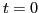

Next: Analytical theory of wave Up: Particle simulation of wave Previous: Inverse Landau damping
Figure (5) compares the spatial distribution at  and , which shows that the distribution become nonuniform at .
Figure 6 is a GIF animation, which shows the time evolution of
the spatial and velocity distribution (spatially averaged) of the particles.
The GIF animation can be viewed only in the HTML version of this document (it
does not work in the PDF version). As the animation shows, the distribution
function in the resonant region (
 ) oscillates with large
amplitude at early stage, and then the amplitude becomes smaller and
saturated. The spatial distribution also oscillates with large amplitude at
early stage and then become much smaller and saturated. The spatial
fluctuation of the density induced by the longitude wave may explain the
density pump out phenomina induced by Low-hybrid waves observed in many
tokamaks.
) oscillates with large
amplitude at early stage, and then the amplitude becomes smaller and
saturated. The spatial distribution also oscillates with large amplitude at
early stage and then become much smaller and saturated. The spatial
fluctuation of the density induced by the longitude wave may explain the
density pump out phenomina induced by Low-hybrid waves observed in many
tokamaks.
yj 2016-01-26